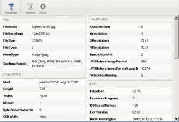

Display all available exif data for a JPG/Tiff picture. This can only activated if you attach the meta.exif meta source to your repository. If GPS coordinates are found and editor.openlayer is active too, you have a button to switch to Google Map (or Open Street Map) and geolocalize your photo.
Warning, this relies on PHP « exif » extension, it must active in your PHP installation.
